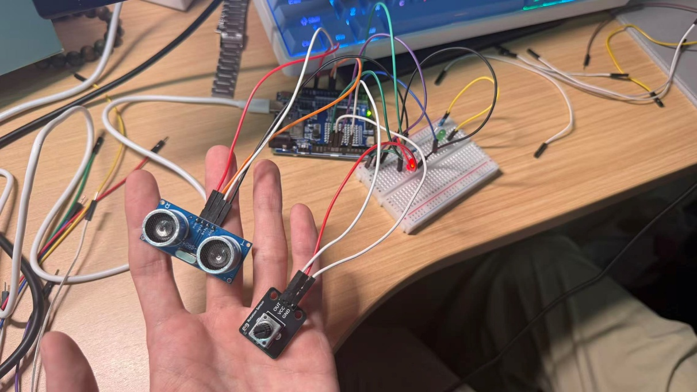
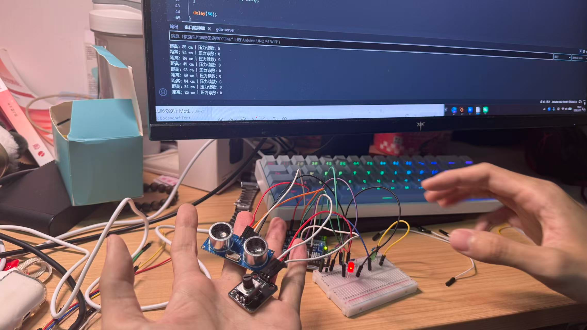
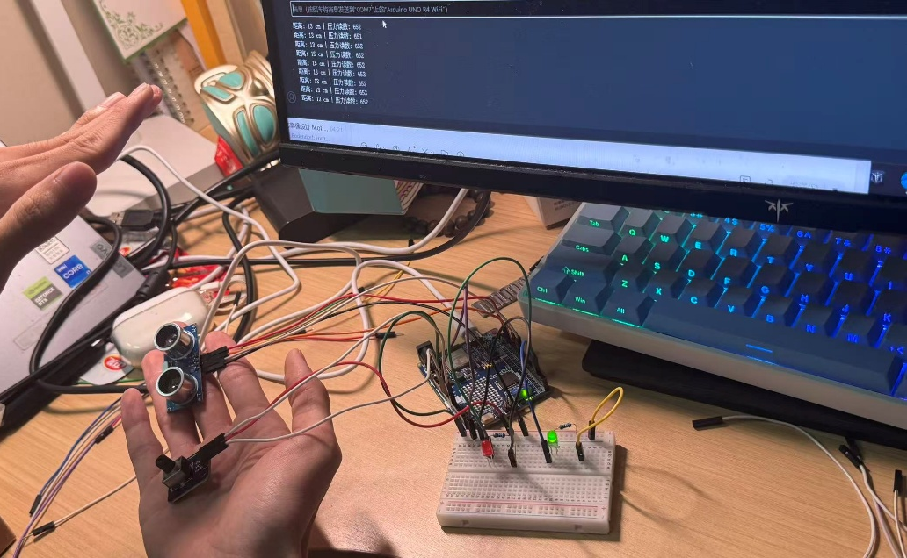
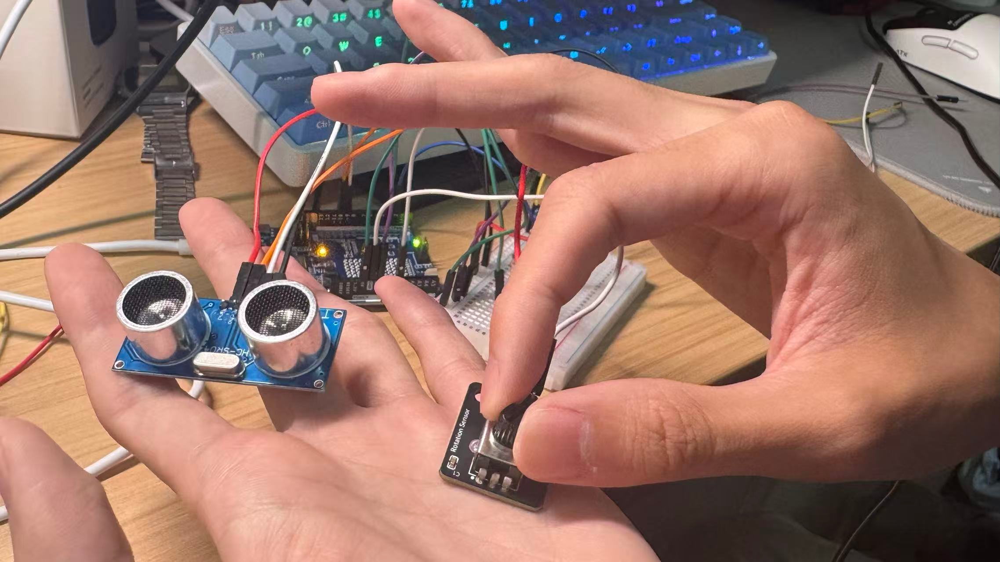

游戏化动作引导
将康复动作转化为直观任务，用户更容易理解与执行。
Process Report for Training Rehabilitation Equipment for Patients with Motor Impairments (Light Bulb Test Project)
本项目基于 Arduino 开发板，制作一套下肢动作标准度测验装置：

器材准备

硬件电路搭建示意图
模块引脚：VCC / GND / OUT
说明：该模块内部已做好分压与滤波，直接输出 0–5V 模拟量，可由 analogRead() 直接读取。
本周训练主题为"动作提示模块"，通过传感器数据为用户提供姿势校正与动作反馈。
训练过程中我们将图片、传感器反馈与文字提示结合，帮助用户更容易完成动作。

传感器连接示意图

传感器布局展示
训练过程示意
以下图片展示本周动作提示模块的设备连接、传感器布局与训练界面，点击可查看放大效果。
Arduino 传感器连接

Arduino 传感器模块
在此处编写控制逻辑代码，包括超声波测距、电位器读取和 LED 控制。
传感器连接布局

系统页面与代码示例
训练过程示意

训练界面展示

康复反馈图示

互动训练界面
将康复动作转化为直观任务，用户更容易理解与执行。
通过即时反馈与奖励增强训练动力，持续推动进步。
简洁画面与引导语减少干扰，让用户更专注于动作完成。
适配多种能力层级，支持不同身体状态用户快速上手。